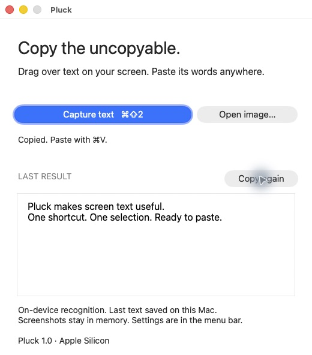

pluck.
Copy the
uncopyable.
Turn text on your screen
into words you can use.
⌘ Shift 2. Drag. Paste.
Recognized on your Mac.

Turn text on your screen
into words you can use.
⌘ Shift 2. Drag. Paste.
Recognized on your Mac.
